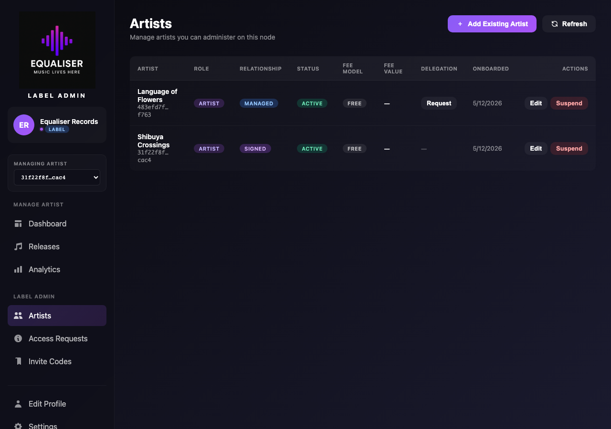
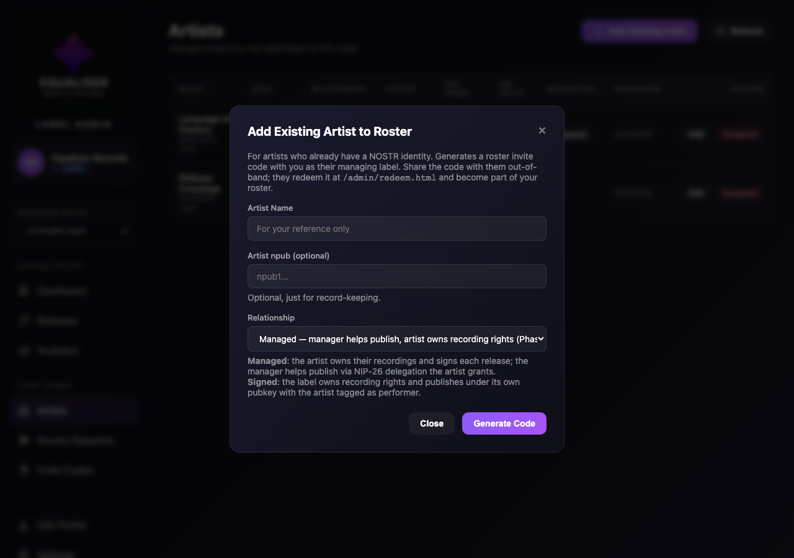
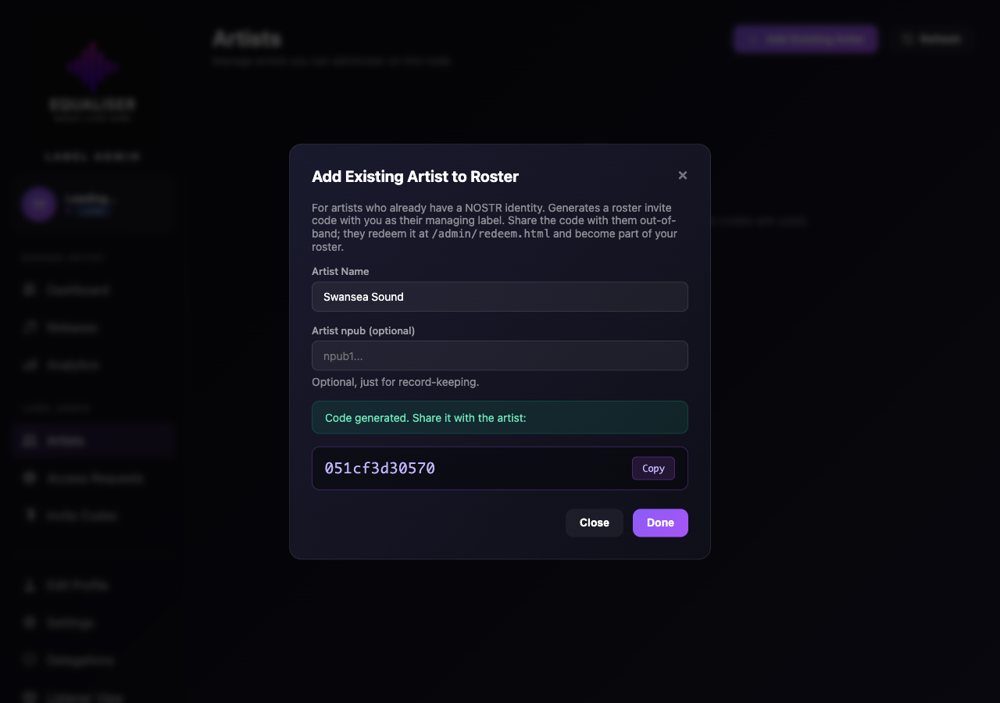
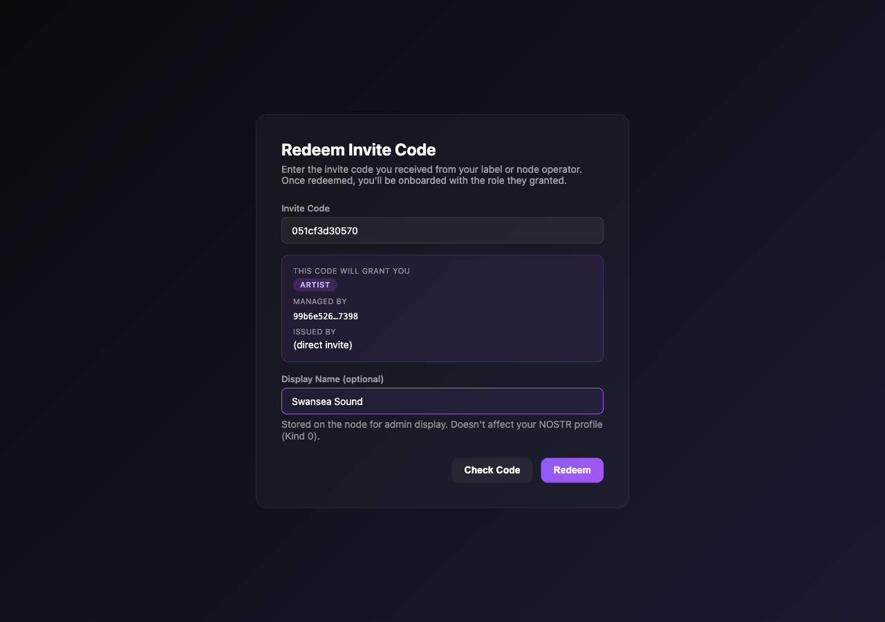
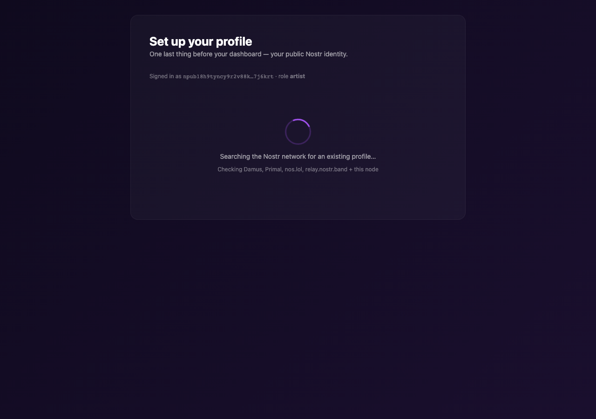
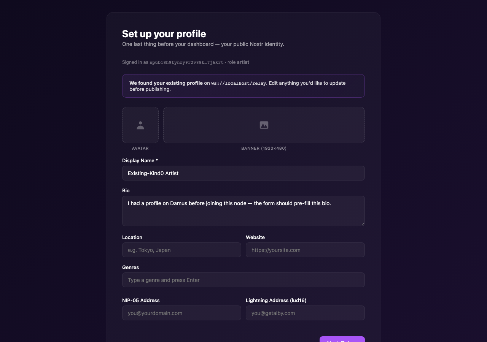
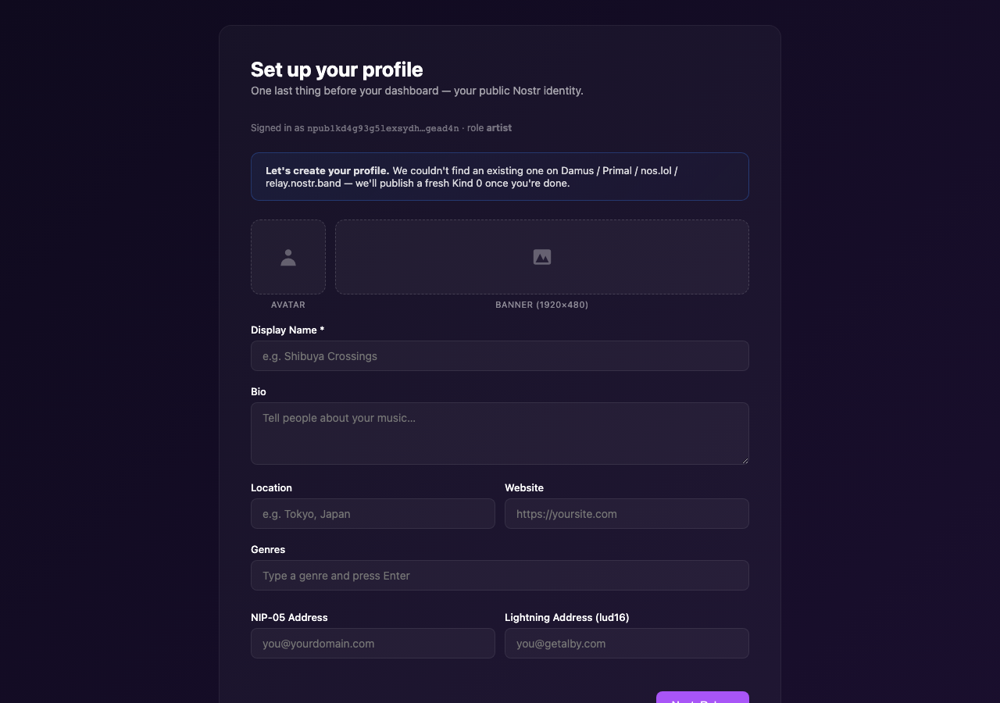
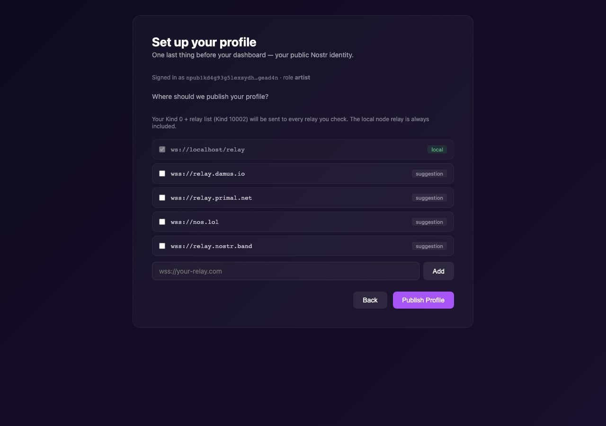
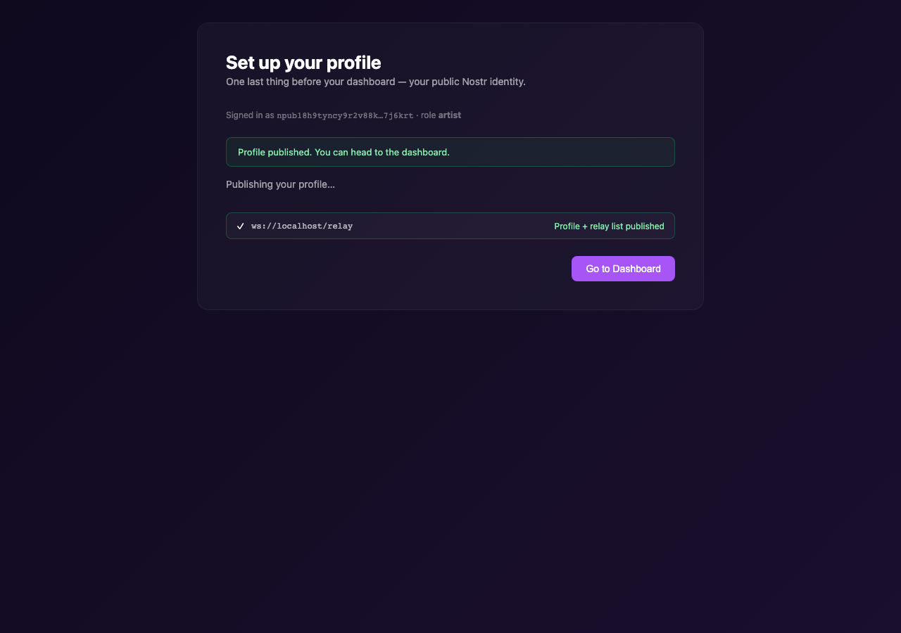

A label brings an artist into their roster using "Add Existing Artist". This generates a roster invite code with target_managed_by = label's pubkey. The artist redeems it with their own keys (existing or fresh) and lands in node_artists with managed_by = label.
At /admin/artist-management.html the label sees their current roster. Below: Equaliser Records' roster after onboarding two artists — Shibuya Crossings as signed and Language of Flowers as managed. (For a brand-new label the table would be empty and an empty state would nudge them to add an artist.)

Clicking Add Existing Artist opens the modal. The label fills in the artist's name, optionally their npub, and — new in Phase G — picks the Relationship: Managed (artist owns rights, label helps publish via NIP-26 delegation) or Signed (label owns recording rights, publishes under its own pubkey with the artist tagged as performer). The chosen type is carried through the invite code and applied to node_artists.relationship_type when the artist redeems.

POST /api/label/add-existing-artist calls the relay's CreateOrphanInviteCode with target_role='artist', target_managed_by = caller pubkey (the label), target_relationship_type from the picker, and issued_by = caller pubkey.
The modal reveals the generated invite code. The label copies it and shares with the artist out-of-band (email, DM, etc.).

The artist generates an nsec (or imports their existing one) and gets redirected to the redeem page. After pasting the code, the preview shows what they're joining: artist role, managed by the label's short pubkey. This is the key signal that they're committing to a roster — not joining as an unmanaged independent artist.

After the backup-file save, the artist is routed to /admin/profile-setup.html before the dashboard. The page first queries Damus, Primal, nos.lol and relay.nostr.band (plus the local node relay) for an existing Kind 0 keyed on the artist's pubkey:

If a Kind 0 is found — the form pre-fills name, bio, location, avatar/banner URLs etc., with a banner telling the artist where it came from. They can edit anything before publishing:

If no Kind 0 exists — the form starts blank and the banner reads "Let's create your profile":

Next step: relay selection. The local node relay is always selected (and locked). The artist's discovered Kind 10002 relays are checked by default; Damus / Primal / nos.lol / relay.nostr.band are listed as unchecked suggestions. Custom relays can be added:

After publish, the artist clicks Go to Dashboard and lands on the admin home. Their node_artists row has managed_by set to the label and their Kind 0 is now on the local relay — the sidebar shows their name + avatar, and the label can list them on artist-management with the correct relationship badge.

/, sign their own profile updates, and (importantly) revoke any delegation they later grant to the label. The label having managed_by permission is purely about admin/edit access — it does NOT give the label signing rights for the artist's events. For signed artists the label's publish authority comes from a different mechanism (the strict-mode performer-tag check; see Signed vs Managed).
Back on the label's /admin/artist-management.html, refreshing shows the artist now in the table with a Relationship badge matching what was set on the invite. For managed artists the Delegation column shows a "Request" button (the label can ask for NIP-26 publish-on-behalf-of as a separate, consent-based step). For signed artists the column shows "—" because publish is already gated by the label's managed_by on node_artists.
/admin/delegations.html), signs a NIP-26 token client-side, and from then on the label can publish Kind 30050/5 on behalf of the artist with a delegation tag. Signed next step: the label can publish immediately via the performer-tag flow — see the Signed vs Managed walkthrough.